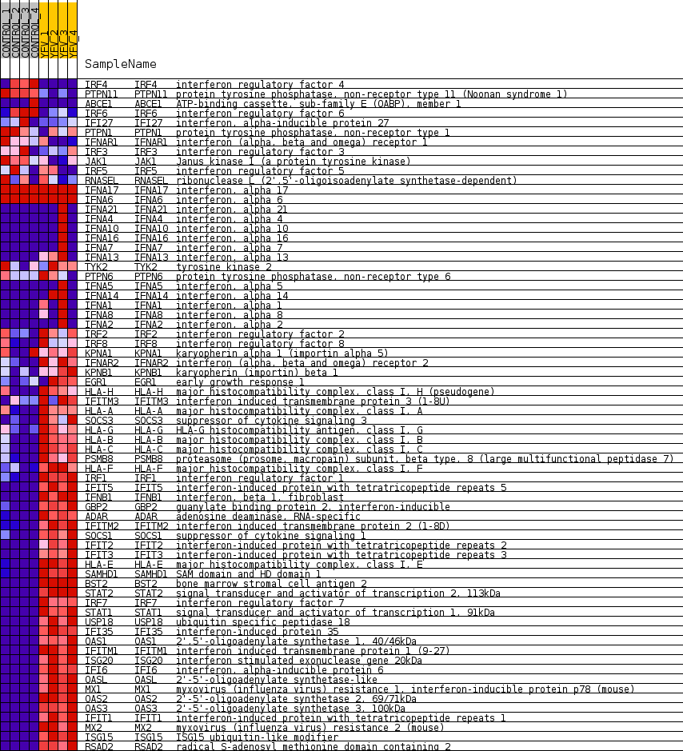
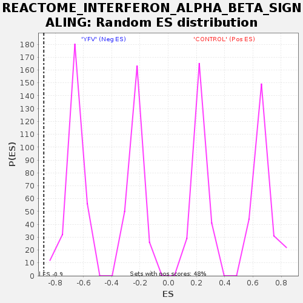

Profile of the Running ES Score & Positions of GeneSet Members on the Rank Ordered List
| Dataset | MATRIZ_GSE99081_collapsed_to_symbols.gsea_CLASE_99081.cls#CONTROL_versus_YFV |
| Phenotype | gsea_CLASE_99081.cls#CONTROL_versus_YFV |
| Upregulated in class | YFV |
| GeneSet | REACTOME_INTERFERON_ALPHA_BETA_SIGNALING |
| Enrichment Score (ES) | -0.8804886 |
| Normalized Enrichment Score (NES) | -1.9379474 |
| Nominal p-value | 0.0 |
| FDR q-value | 0.011999999 |
| FWER p-Value | 0.012 |
| SYMBOL | TITLE | RANK IN GENE LIST | RANK METRIC SCORE | RUNNING ES | CORE ENRICHMENT | |
|---|---|---|---|---|---|---|
| 1 | IRF4 | interferon regulatory factor 4 | 70 | 1.418 | 0.0069 | No |
| 2 | PTPN11 | protein tyrosine phosphatase, non-receptor type 11 (Noonan syndrome 1) | 389 | 0.883 | -0.0058 | No |
| 3 | ABCE1 | ATP-binding cassette, sub-family E (OABP), member 1 | 1710 | 0.500 | -0.0835 | No |
| 4 | IRF6 | interferon regulatory factor 6 | 1989 | 0.486 | -0.0968 | No |
| 5 | IFI27 | interferon, alpha-inducible protein 27 | 2743 | 0.376 | -0.1404 | No |
| 6 | PTPN1 | protein tyrosine phosphatase, non-receptor type 1 | 3310 | 0.308 | -0.1730 | No |
| 7 | IFNAR1 | interferon (alpha, beta and omega) receptor 1 | 3602 | 0.278 | -0.1888 | No |
| 8 | IRF3 | interferon regulatory factor 3 | 3858 | 0.253 | -0.2026 | No |
| 9 | JAK1 | Janus kinase 1 (a protein tyrosine kinase) | 5037 | 0.156 | -0.2742 | No |
| 10 | IRF5 | interferon regulatory factor 5 | 5311 | 0.129 | -0.2900 | No |
| 11 | RNASEL | ribonuclease L (2',5'-oligoisoadenylate synthetase-dependent) | 6165 | 0.063 | -0.3423 | No |
| 12 | IFNA17 | interferon, alpha 17 | 7874 | 0.000 | -0.4479 | No |
| 13 | IFNA6 | interferon, alpha 6 | 8160 | 0.000 | -0.4655 | No |
| 14 | IFNA21 | interferon, alpha 21 | 9399 | -0.000 | -0.5421 | No |
| 15 | IFNA4 | interferon, alpha 4 | 9401 | -0.000 | -0.5422 | No |
| 16 | IFNA10 | interferon, alpha 10 | 9402 | -0.000 | -0.5422 | No |
| 17 | IFNA16 | interferon, alpha 16 | 9404 | -0.000 | -0.5422 | No |
| 18 | IFNA7 | interferon, alpha 7 | 9419 | -0.000 | -0.5431 | No |
| 19 | IFNA13 | interferon, alpha 13 | 9446 | -0.000 | -0.5447 | No |
| 20 | TYK2 | tyrosine kinase 2 | 10673 | -0.073 | -0.6199 | No |
| 21 | PTPN6 | protein tyrosine phosphatase, non-receptor type 6 | 10935 | -0.096 | -0.6353 | No |
| 22 | IFNA5 | interferon, alpha 5 | 11441 | -0.143 | -0.6654 | No |
| 23 | IFNA14 | interferon, alpha 14 | 11459 | -0.144 | -0.6653 | No |
| 24 | IFNA1 | interferon, alpha 1 | 11781 | -0.173 | -0.6838 | No |
| 25 | IFNA8 | interferon, alpha 8 | 12508 | -0.246 | -0.7268 | No |
| 26 | IFNA2 | interferon, alpha 2 | 12634 | -0.258 | -0.7325 | No |
| 27 | IRF2 | interferon regulatory factor 2 | 13674 | -0.391 | -0.7936 | No |
| 28 | IRF8 | interferon regulatory factor 8 | 13798 | -0.411 | -0.7980 | No |
| 29 | KPNA1 | karyopherin alpha 1 (importin alpha 5) | 13898 | -0.425 | -0.8008 | No |
| 30 | IFNAR2 | interferon (alpha, beta and omega) receptor 2 | 14588 | -0.513 | -0.8393 | No |
| 31 | KPNB1 | karyopherin (importin) beta 1 | 15038 | -0.635 | -0.8621 | No |
| 32 | EGR1 | early growth response 1 | 15267 | -0.719 | -0.8705 | No |
| 33 | HLA-H | major histocompatibility complex, class I, H (pseudogene) | 15430 | -0.799 | -0.8742 | Yes |
| 34 | IFITM3 | interferon induced transmembrane protein 3 (1-8U) | 15437 | -0.801 | -0.8682 | Yes |
| 35 | HLA-A | major histocompatibility complex, class I, A | 15527 | -0.844 | -0.8670 | Yes |
| 36 | SOCS3 | suppressor of cytokine signaling 3 | 15669 | -0.939 | -0.8683 | Yes |
| 37 | HLA-G | HLA-G histocompatibility antigen, class I, G | 15750 | -1.037 | -0.8651 | Yes |
| 38 | HLA-B | major histocompatibility complex, class I, B | 15985 | -1.547 | -0.8673 | Yes |
| 39 | HLA-C | major histocompatibility complex, class I, C | 15993 | -1.566 | -0.8554 | Yes |
| 40 | PSMB8 | proteasome (prosome, macropain) subunit, beta type, 8 (large multifunctional peptidase 7) | 16014 | -1.655 | -0.8435 | Yes |
| 41 | HLA-F | major histocompatibility complex, class I, F | 16048 | -1.825 | -0.8311 | Yes |
| 42 | IRF1 | interferon regulatory factor 1 | 16089 | -2.087 | -0.8171 | Yes |
| 43 | IFIT5 | interferon-induced protein with tetratricopeptide repeats 5 | 16097 | -2.198 | -0.8001 | Yes |
| 44 | IFNB1 | interferon, beta 1, fibroblast | 16102 | -2.253 | -0.7826 | Yes |
| 45 | GBP2 | guanylate binding protein 2, interferon-inducible | 16108 | -2.321 | -0.7645 | Yes |
| 46 | ADAR | adenosine deaminase, RNA-specific | 16111 | -2.342 | -0.7461 | Yes |
| 47 | IFITM2 | interferon induced transmembrane protein 2 (1-8D) | 16126 | -2.433 | -0.7278 | Yes |
| 48 | SOCS1 | suppressor of cytokine signaling 1 | 16143 | -2.593 | -0.7082 | Yes |
| 49 | IFIT2 | interferon-induced protein with tetratricopeptide repeats 2 | 16149 | -2.694 | -0.6872 | Yes |
| 50 | IFIT3 | interferon-induced protein with tetratricopeptide repeats 3 | 16157 | -2.751 | -0.6659 | Yes |
| 51 | HLA-E | major histocompatibility complex, class I, E | 16160 | -2.828 | -0.6437 | Yes |
| 52 | SAMHD1 | SAM domain and HD domain 1 | 16172 | -3.033 | -0.6204 | Yes |
| 53 | BST2 | bone marrow stromal cell antigen 2 | 16173 | -3.033 | -0.5964 | Yes |
| 54 | STAT2 | signal transducer and activator of transcription 2, 113kDa | 16178 | -3.116 | -0.5720 | Yes |
| 55 | IRF7 | interferon regulatory factor 7 | 16202 | -3.791 | -0.5434 | Yes |
| 56 | STAT1 | signal transducer and activator of transcription 1, 91kDa | 16215 | -4.153 | -0.5113 | Yes |
| 57 | USP18 | ubiquitin specific peptidase 18 | 16216 | -4.180 | -0.4783 | Yes |
| 58 | IFI35 | interferon-induced protein 35 | 16220 | -4.236 | -0.4450 | Yes |
| 59 | OAS1 | 2',5'-oligoadenylate synthetase 1, 40/46kDa | 16221 | -4.298 | -0.4110 | Yes |
| 60 | IFITM1 | interferon induced transmembrane protein 1 (9-27) | 16222 | -4.364 | -0.3765 | Yes |
| 61 | ISG20 | interferon stimulated exonuclease gene 20kDa | 16226 | -4.624 | -0.3401 | Yes |
| 62 | IFI6 | interferon, alpha-inducible protein 6 | 16227 | -4.644 | -0.3034 | Yes |
| 63 | OASL | 2'-5'-oligoadenylate synthetase-like | 16228 | -4.654 | -0.2666 | Yes |
| 64 | MX1 | myxovirus (influenza virus) resistance 1, interferon-inducible protein p78 (mouse) | 16229 | -4.704 | -0.2294 | Yes |
| 65 | OAS2 | 2'-5'-oligoadenylate synthetase 2, 69/71kDa | 16231 | -4.784 | -0.1916 | Yes |
| 66 | OAS3 | 2'-5'-oligoadenylate synthetase 3, 100kDa | 16232 | -4.808 | -0.1536 | Yes |
| 67 | IFIT1 | interferon-induced protein with tetratricopeptide repeats 1 | 16233 | -4.809 | -0.1155 | Yes |
| 68 | MX2 | myxovirus (influenza virus) resistance 2 (mouse) | 16234 | -4.817 | -0.0774 | Yes |
| 69 | ISG15 | ISG15 ubiquitin-like modifier | 16236 | -4.880 | -0.0389 | Yes |
| 70 | RSAD2 | radical S-adenosyl methionine domain containing 2 | 16238 | -4.936 | 0.0001 | Yes |

